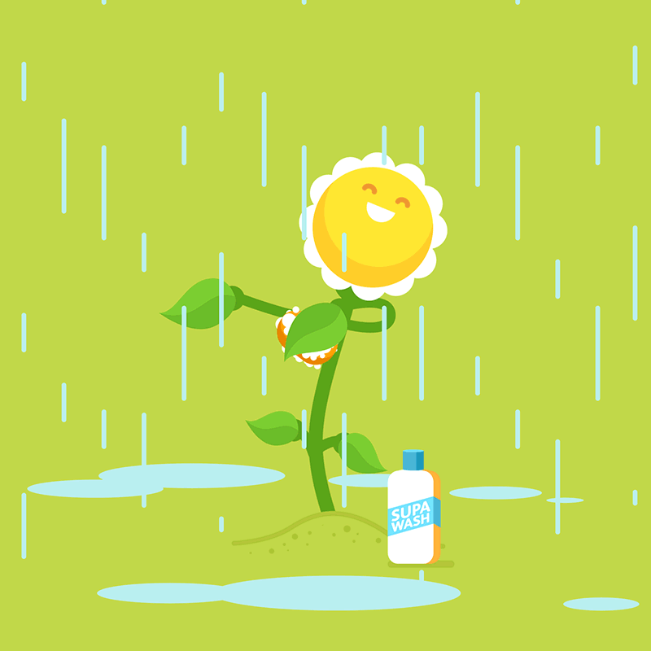

<!DOCTYPE html>
<html lang="en">

<head>
    <meta charset="UTF-8">
    <meta name="viewport" content="width=device-width, initial-scale=1.0">
    <title>Document</title>
</head>

<body>

</body>

</html>
<!DOCTYPE html>
<html lang="en">

<head>
    <meta charset="UTF-8">
    <meta name="viewport" content="width=device-width, initial-scale=1.0">
    <title>Document</title>

    <script src="https://ajax.googleapis.com/ajax/libs/jquery/3.7.1/jquery.min.js"></script>
    <link rel="stylesheet" href="https://cdn.jsdelivr.net/npm/bootstrap@5.3.2/dist/css/bootstrap.min.css">
    <style>
        body {
            font-family: Georgia, 'Times New Roman', Times, serif;


        }
    </style>

</head>

<body>
    <div class="container mt-3 text-center">

        <h2>JQuery Effects:Slide down Method</h2>
        <p>The <code>slideToggle()</code>method<b><i>slides an element downward to make it visible.</i></b></p>


        <p>
            Sytax: <code>$(selector).slideToggle();</code>
        </p>

        <!-- box -->
        <div id="box" style="width: fit-content;" class="bg-dark text-white p-3 m-auto ">
           Welcome to jQuery Effects
            
        </div>
        <br>


        <button id="toggle" class="btn btn-info"> Slide Toggle</button>


    </div>


    <!-- jquery -->
    <script>
        $("#toggle").contextmenu(function () {
            $("#box").slideToggle("slow");

        })


    </script>

</body>

</html>